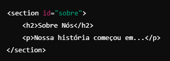

header: Para fazer o cabeçario da pagina, titulos, logotipo, menus de navegação
main: Contem o conteudo principal da pagina excluindo cabeçalhos, rodapés, barras laterais, etc e indica o foco principal da pagina.
section: Define uma seção temática ou agrupada de conteúdo sado para dividir páginas em partes lógicas, como "Sobre nós", "Serviços" ou "Produtos". ex:

article: Representa conteudo independente e autocontido como postagens de blogs, noticias, ou entrada de forum
Tags de conteudo
titulo
paragrafo
span(Define um contêiner inline sem significado semântico)
div(Define um contêiner em bloco sem significado semântico)